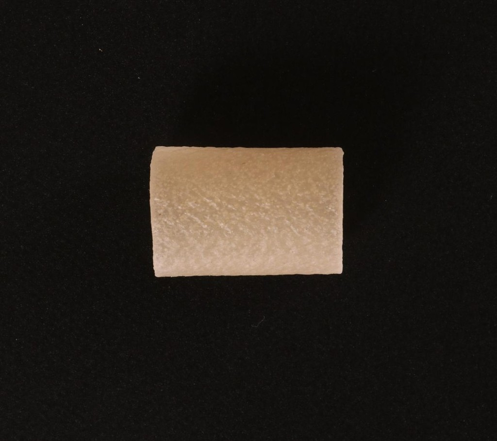
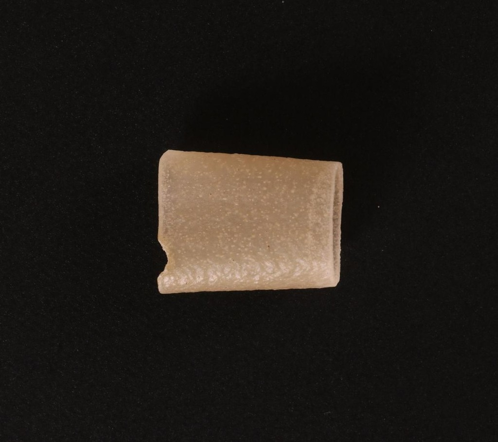

imajev
imajevDecisions for real-world cases.
Your teams make the same judgements thousands of times a day: does this listing match its photo, is this the item we shipped, who owns this ticket, does this refund meet the policy. imajev reads the photos, records and text you already have and answers in the options you set, with a probability on each and an explicit can't tell. Your system acts when it is sure and hands the rest to a person.
Runs on your own hardwareYour data never leavesOpen weights, Apache-2.02B · 4B · 9B
Change the record and see what imajev-4b answered. Every state here was actually run through the model and checked against the right answer; nothing is typed in by hand.
What sets it apart
Jev reads text only. General vision models answer in prose, from a hosted API, in seconds. imajev brings Jev's typed answers to photos, and runs on your own hardware.
 listing.colorred
listing.colorredA photo read against your record
Checks a photo against the fields in your own data and names the field that is wrong. Trained on 72k photo-vs-record and two-photo decisions.

vs
Two photos, one decision
A reference and a target in the same request: what was shipped against what came back, a known-good part against the one on the line.
A trained can't tell
Every answer carries a probability for unknown. Asked for a white or beige bag from a closet with only a red and a black backpack, the 4B puts 0.89 on unknown instead of guessing, and it abstains on only 3 of the 258 answerable items (2B 4, 9B 2).
Open, small and local
Apache-2.0 weights from 2B. Runs on a Mac or one GPU, about 0.1 s per question raw (0.3 s with 4 rotations), so photos and customer data never leave your network. The Mac (MLX) weights agree with the GPU run on 97 to 99% of ImajevBench answers (2B 97.1%, 4B 98.2%, 9B 99.3%).
Jev's contract, now with images
The same request and response as Jev, plus images, unknown_probability and abstained. Text-only Jev requests work unchanged.
| imajev | Jev (TypeSafe) | Jev-Omni | Frontier vision APIs | |
|---|---|---|---|---|
| photos in a request | up to 2 (reference + target) | none, text only | yes; two-photo requests not documented | yes |
| answer format | probability per option you set | probability per option you set | probability per option you set | generated text or JSON |
| says it can't tell | trained unknown, 14 / 21 on ImajevBench | not documented | no abstain output, so 0 / 21 | only if prompted |
| record per request | 32 KB (about 8k tokens) | 32k tokens | not documented | large |
| where it runs | your hardware, open weights | hosted API | your hardware, open weights (12B) | hosted API |
| time per decision | about 0.1 s raw, 0.3 s with 4 rotations (one H100, under load) | not documented | about 0.1 s (one H100) | 5 to 8 s |
| ImajevBench accuracy | 82.4% (4B) | cannot take photos | 78.5% | 91.4% to 99.6% |
Jev from docs.typesafe.ai (models page, Jev 1.13.0). Jev-Omni from its model card and our run of its own predict() API. Frontier rows and all ImajevBench numbers from our runs, 24 Sept 2026; frontier models answer by structured generation, a different interface. Jev's record limit is larger than imajev's.
One request, every answer typed
Send the evidence and the questions you care about. Each comes back as a probability over the answers you allowed, ready for an if. The code below is the exact script we ran against imajev-4b; the result is its output, with numbers rounded to three places.
Where it fits
The decisions it handles well are the high-volume, well-defined ones with a clear set of answers. Each item below opens a checked example. Also on the same endpoint: a kids' letter-tracing pad and a closet stylist; every clickable combination in the apps is checked against the right answer before it is shown.
Automate what is clear, route the rest
You choose how sure the model must be before it acts. A higher bar automates less but makes fewer mistakes; everything below it goes to a person. Pick the bar from what a mistake costs you.
imajev-4b on the 279 ImajevBench test questions: photos, records and text, including 21 whose honest answer is can't tell. The benchmark is built to be hard, with near-identical pairs that differ in one detail, so treat these numbers as a starting point and measure on a few hundred of your own cases before you choose.
automatic, rightsent to a personautomatic, wrong
Each square is one benchmark question.
Examples, every one of them checked
Real requests from the playground, answered by imajev-4b. Click a record value or a photo to switch to another checked run. Misses are shown too.
Checked, not cherry-picked
Each example comes from one of five small apps built on imajev. Every combination a visitor can click in those apps is sent to the model and compared with the right answer. Each square below is one of those runs; click it to open that exact run in the examples above.
right answer, expected actionright answer, but under 80% sure, so sent to a personwrong answer
The apps run imajev-4b without its calibration file. With the file the top answer never changes, but confidence is lower, so more cases go to a person at the 80% threshold; the second count on each row shows that. The text checks were written for this page and run once. The others were written while building the apps on an earlier model and rerun unchanged.
Why a business would run it
Your data stays with you
Runs on your own servers, or on a Mac for small volumes. No photo, record or customer message leaves your network.
Decisions, not paragraphs
It answers only in the options you define, so it plugs into existing rules and workflows like any other system. Nothing to parse.
It says when it can't tell
A trained unknown for missing or contradictory evidence, plus a probability you threshold. People review what is unclear.
Every decision is on the record
Each answer is a set of probabilities over your options. Log them, audit them, and see exactly why a case was automated or escalated.
Photos, records and text together
Compare a photo with a record, a returned item with what was shipped, or an email with the account, in one request.
Cheap at volume
About 0.1 s per question raw on one GPU, tens of thousands of decisions an hour raw, about 10,000 an hour as served with four option orders, or 0.3 s with the 4 option rotations it is served with, with no per-call fees. Sizes from 2B for tight budgets to 9B.
Where it stands
Same protocol for every system on each chart. imajev is not the most accurate option. It is the small one that runs on your own hardware, answers a question in about 0.1 s raw (0.3 s with 4 rotations) on one GPU, and can abstain.
The imajev adapter lifts Qwen3.5-4B from 70.6% to 82.4% on ImajevBench (+11.8 points; the paired test gives p = 0.0006). The 4B is level with the 9B there. On a 202-item hidden split that is never published item by item, the sizes score 74.3%, 84.2% and 84.7%.
imajev-4b answers unknown correctly on 14 of 21 items. Jev-Omni, another open Jev-class model, has no abstain output: 78.5% overall, 0 of 21 unknown, and it is slightly ahead on answerable items.
JevK5 and Eikos-4B (73.9%) lead every imajev size on JevBench hard, by 3 to 4 items of 111; the 4B (70.3%) is above Hopper (67.6%). A reasoning model scores 97.3%, at seconds and thousands of tokens per decision.
How it was made
About a million training decisions in three stages, on open base models, for $676 of rented GPU time for the whole project.
- Model
- A rank-16 LoRA on the language layers of Qwen3.5 (2B, 4B, 9B), plus a small readout over your option codes. The vision encoder is frozen.
- Never trained on
- Jev outputs, paid-API outputs or JevBench items. Every teacher is an open-weight model.
- Compute
- $676Rented GPU time for the whole project, every experiment included.
- Licence
- Adapters, readouts and code Apache-2.0, on Apache-2.0 base models.
Per-stage results, the costs of the last stage and how to rebuild every dataset are in the report.
Technical specification
Three adapters on pinned Qwen3.5 base models, trained with the same recipe. Every number below comes from the run manifests, logs and billing records in the repository.
| imajev-2b | imajev-4b | imajev-9b | |
|---|---|---|---|
| Base model, pinned revision | Qwen3.5-2B @15852e8c | Qwen3.5-4B @851bf6e8 | Qwen3.5-9B @c2022362 |
| Trainable parametersLoRA r=16, α=32, plus readout | 16,152,576 | 31,127,040 | 41,152,512 |
| Adapter file, float32 | 62.6 MB | 122.0 MB | 160.5 MB |
| Decision readoutone bias-free linear layer over 255 option codes | 255 × 2048 | 255 × 2560 | 255 × 4096 |
| Calibration temperature | 1.65 | 1.72 | 1.75 |
| Base download | 4.6 GB | 9.3 GB | 19.3 GB |
36 licence-admitted public sources: 200,000 text decisions from 15 sources, 300,000 image decisions from 21 sources, 4,000 photo-vs-listing contradictions. Trained into the 2B and 9B.
The 9B labelled candidates on new photo and text sources and on photo-vs-record and two-photo questions; 77.0% were kept because the answer held under two option orders. With 17,162 edited-photo pairs labelled by construction, the stage holds 71,630 photo-vs-record and two-photo decisions. The 4B took stages 1 and 2 as one 866,854-decision run.
Hard typed questions written by open-weight teachers and kept only when independent answerers agreed (9,368 then 4,852 kept), plus 8,532 items from licensed human reasoning sets. All three models. Then 2 epochs on 39,515 rows with probability targets (the hard questions relabelled by Qwen3.6-35B-A3B, 9,880 new hard rows, 10,570 Eikos decisions, 5,000 image replay); each shipped adapter is the weight-space average of the round-2 adapter and that continuation's best checkpoint.
Recipe
Cross-entropy on the readout logits over the listed options (soft targets where a record carries a distribution). AdamW, weight decay 0, linear warm-up then cosine decay to 10% of the peak rate, gradient clipping 1.0, seed 0, on 4 GPUs. Peak rate 2e-4 for first runs down to 2e-5 in the last round.
Compute
About $676 of rented GPU time for the whole project ($499.07 for the first three stages, about $177 for the soft-target continuation), every run included: labelling, generation, all training, all evaluations and aborted pods, on H100 and H200 pods.
Per-source counts and licences, training runs by model, costs by use, evaluation sets and contamination checks are in the full technical specification and in section 6 of the report.
Run it on your machine
One server per model on POST /v1/systemone. No network calls at inference.
Start a server
Call it like Jev
TypeSafe's own example request, sent to your server instead of api.typesafe.ai. Photos go as multipart files.
| Model | Use it when | ImajevBench | JevBench hard | Unknown right | Base download |
|---|---|---|---|---|---|
| imajev-2b | memory or latency is the constraint | 71.7% | 60.4% | 5 / 21 | 4.6 GB |
| imajev-4b | the default for almost everything | 82.4% | 70.3% | 14 / 21 | 9.3 GB |
| imajev-9b | knowledge-heavy text, when memory is not tight | 82.1% | 69.4% | 15 / 21 | 19.3 GB |
The full contract, the act-or-escalate pattern, fitting your own calibration and how to reproduce every number are in the report's developer section.
Limits
No reasoning at inference
One forward pass by design. Multi-step arithmetic and judging answer quality trail reasoning models.
An empty field can read as "no"
With a blank payment note, the 4B answered "not paid" instead of unknown. Unknown is trained for missing evidence, not guaranteed.
Scribbles read as letters
On the tracing pad it reads 20 of 20 traced letters and numbers correctly but calls 8 of 10 scribbles a letter. In 6 of those the confidence is low and the app asks for another try; in 2 it tells the child they drew an A.
Over-confident without calibration
Raw ECE on hard text items is 0.16 to 0.19. Use the calibration file there, or fit one on your own data.
The 2B rarely abstains
5 of 21 unknown items on ImajevBench, against 14 for the 4B and 15 for the 9B.
Real photo pairs are the hardest task
Two photos with a known edit are near-perfect (98% on our pairs probe), but natural pairs of real photos scored 41.8% on an earlier 4B checkpoint; not yet re-run on the release.
English, two photos, a preview benchmark
ImajevBench images are AI-generated and model-audited, with no human audit yet.